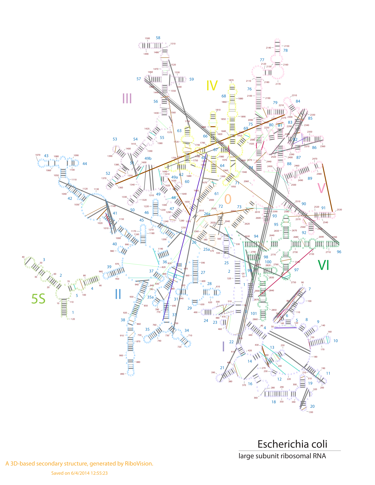

What we call "Interactions" is that the user (you) have decided you'd like a line drawn between two nucleotides. The relationship between those two nucleotides is totally up to you. You may have decided this "by hand", or you may have adapted your computer programs to output to our input format.
For this example, we have decided to use real Watson/Hoogsteen interactions. We downloaded the list of these interactions from RiboVision, then added additional properties to them. We've added Color, Opacity, and LineWidth values based on different properties of these base pairs. You may try to figure out what each of these variables is correlated with if you like. Otherwise, the exact nature of this relationship doesn't matter for this demonstration. You will have your own criteria for what you want to see.
| Residue_i | Residue_j | Int_Type | ColorCol | Opacity | LineWidth |
|---|---|---|---|---|---|
| 23S:1 | 23S:2902 | cWW | Gray | 1.00 | 1.5 |
| 23S:10 | 23S:2629 | tHW | Orange | 0.67 | 1.0 |
| 23S:33 | 23S:447 | tWH | Cyan | 0.67 | 0.5 |
| 23S:49 | 23S:120 | cHW | Red | 0.67 | 1.0 |
| 23S:191 | 23S:204 | tHH | Green | 0.33 | 0.5 |
Here is the csv file for this example. Below, is this file mapped onto E. coli LSU 3D-based Structure. 